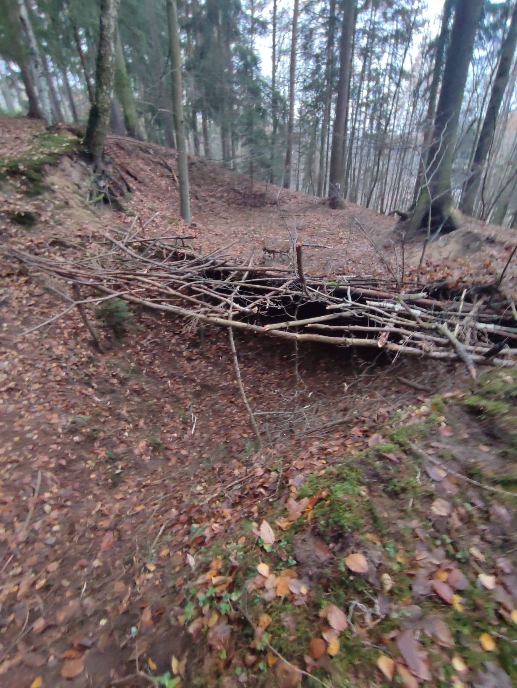

Postavený vlastníma rukama z klacků, bahna a dobrodružství. Hluboko v lese, kam vede jen jedna stezka.
⚠ Prosím, neničte náš bunkr! ⚠
Jsme parta 3 kluků, kteří se baví hraním videoher, ale ve volném čase raději vyrážíme do lesa a stavíme bunkry.
Stavba tohoto bunkru začala 15. 11. 2025 a stále pokračuje — i po roce na něm pořád něco vylepšujeme a přidáváme nové klacky.
A tenhle rok se k nám navíc přidal nový člen party!
Stavěli jsme dlouho a s láskou. Buď v lese kámoš, ne bourač.
🚫 Neničte náš bunkr! 🚫